Data-Centric AI: Business and Data Understanding
Data-Centric AI (Module II)
DISI — University of Bologna
m.francia@unibo.it

Business Understanding
(Perhaps the most important/hard phase of any data mining project (Shearer 2000))
The business understanding phase focuses on
- Determining the business objectives
- Assessing the context of the analysis
- Determining and translating objectives into data mining goals
- Producing the project plan
It is essential to understand which data should later be analyzed and how
 Business Understanding: Brown Spot
Business Understanding: Brown Spot
Brown spot of European Pear
Brown spot of European Pear
- A company wants to track the spreading of the Brown spot of European pear in Emilia Romagna.
- Brown spots are caused by a fungus (Stemphylium vesicarium) damaging pear fruits and causing economic loss for producers.
- Also, the company wants to find out if there are environmental factors related to the spreading of such fungus and the level of damage.
How would you address this problem?
Determine the Business Objectives
Ideally, the goal is to build a dataset such as the following
Field AVG. Temperature Presence of Water Source … Level of Damage Field#1 14 Close distance … High Field#2 14.5 Medium distance … Medium Field#3 13.8 Medium distance … Low Field#4 … … … … and to learn relationships between environmental features and Level of Damage (the target of the analysis).
- What features would you collect?
- How do we translate this problem into a quantitative metric?
Determine the Data Mining Goal
Ideally, the goal is to build a dataset such as the following
Field AVG. Temperature Presence of Water Source … Level of Damage Field#1 14 Close distance … High Field#2 14.5 Medium distance … Medium Field#3 13.8 Medium distance … Low Field#4 … … … … and to learn relationships between environmental features and Level of Damage (the target of the analysis).
In other words, can we identify features that allows us to predict an accurate level of damage?
Metrics: predict the level of damage with high accuracy
- How would you define accuracy?
Determine the Data Mining Goal
Ideally, the goal is to build a dataset such as the following
Field AVG. Temperature Presence of Water Source … Level of Damage Field#1 14 Close distance … High Field#2 14.5 Medium distance … Medium Field#3 13.8 Medium distance … Low Field#4 … … … … and to learn relationships between environmental features and Level of Damage (the target of the analysis).
In other words, can we identify features that allows us to predict an accurate level of damage?
How can we collect the data?
Assess the Situation: how can we collect the data?
The company prepares a questionnaire on paper with around 100 questions, and one of the employees moves across Emilia-Romagna to ask questions to the farmers and collect their answers.
Emilia Romagna, Italy
What are the pros/cons of this solution?
Once the employee had collected almost 100 questionnaires, the company asked us to apply machine learning techniques to understand which environmental conditions could be related to the spreading of the fungus.
If you were the analyst, what would you do?
If you were the analyst, what would you do?
To us, it was impossible to apply machine learning techniques to data on paper.
We prepared a Google Form where answers could be digitalized.
The employee would take ~1 month to return the digitalized questionnaires.
Issue #1: some answers were inconsistent with the provided options.
Issue #2: what about open questions?
Issue #3: what about the trustworthiness of the data? E.g., there are some pesticides/fertilizers whose application is constrained by Italian/European laws. Can we trust the answers to these questions?
Issue #4: we have a dataset of 100 features (assuming for simplicity that each question can be simply turned into an attribute), and a dataset of 100 data.
Outcome
- This project was missing a proper plan (business+data understanding), and turned out to be a failure for the company.
- Even if we apply ML techniques to the data, the results we would get are not statistically relevant.
End of the case study
Back to CRISP-DM: Business understanding
Determine the Business Objectives
Understanding a client’s true goal is critical to uncovering the important factors involved in the project
- Data analysts must uncover the primary business objective as well as the related questions the business would like to address
- Ensure that the project does not produce the right answers to the wrong questions
- Beware of setting unattainable goals
- Make sure that each success criterion relates to at least one of the specified business objectives
The business goal could be to retain current customers by predicting when they are prone to move to a competitor
- “How does the primary channel (e.g., ATM, branch visit, Internet) of a bank customer affect whether they stay or go?”
- “Will lower ATM fees significantly reduce the number of high-value customers who leave?”
The metrics must be SMART:
- Specific
- Measurable
- Achievable
- Relevant
- Time-bound

If the business goal cannot be effectively translated into a data mining goal, it may be wise to consider redefining the problem
Success may be measured by reducing lost customers by 10% or by achieving a better understanding of the customer base
Success should also be defined in these terms, such as achieving a certain level of predictive accuracy
Data collection (or acquisition)
Data collection is the process of gathering information on targeted variables in an established system
- Capture evidence that allows data analysis to formulate credible answers to the questions that have been posed
- The analyst should make sure to report problems and solutions to aid with future replications of the project.
- Data may have to be collected from several different sources, and some of these sources may have a lag time.
The analyst then proceeds to
- increase familiarity with the data,
- identify data quality problems,
- discover initial insights into the data,
- detect interesting subsets to form hypotheses about hidden information
Problem: is data the new oil?
The more data we have, the more analysis we can do (however, more data != smarter data)
- There are several disciplines focusing on data (e.g., Data Science, Data Mining, Big Data, Business Intelligence)
- In Europe (but now in many areas of the world), there can be problems related to privacy
- When is it “right” to protect privacy?
- When does it become a limit?
Acquiring data is a time-consuming, investment and knowledge-intensive process
- How much data is enough?
Rule of thumb: one in ten/twenty (Chowdhury and Turin 2020)
There is no set rule as to the number of variables to include in a prediction model as it often depends on several factors. The ‘one in ten rule’, a rule that stipulates how many variables/parameters can be estimated from a data set, is quite popular in traditional clinical prediction modeling strategies (e.g., logistic regression and survival models). According to this rule, one variable can be considered in a model for every 10 events.
Problem: how can we collect data?
Acquisition of a new dataset
Data collection is usually a costly process.
Investment of time and money for:
- Programming or learning to use an acquisition tool
- Handling of large amounts of data
- Testing to find any bugs that could compromise the success of the acquisition
- Unfortunately, we often notice them at the end of the process
- Acquire new hardware for data collection and storage
It is necessary to carefully consider whether it is appropriate to acquire a new dataset.
- Considerations not only in engineering but also in management and economic aspects
- Future needs must be foreseen in advance
Common Problems in Data Collection
Sometimes companies have a lot of “old” data in their databases or information systems:
- They don’t know what to do with it
- Data re-collection on existing data (since data must be clean or something similar)
In many business processes, it is unclear:
- Which data is possible to collect (also due to privacy issues)
- Which data is (really) useful for the business
Public Datasets
We can get data mainly in two ways.
By using publicly available data (datasets or databases)
- Someone collected them for us!
- They can be free or for a fee
- The quality of the data made available must be checked
By acquiring a new set of data, but why?
- It is not certain that public data well represents the problem we want to solve
- We want to acquire specific data and thus generate specific expertise for the company (know-how)
- We are forced to acquire data that, due to their sensitive nature, would not otherwise be available (privacy issues)
- The company we work for already has a data collection process that we can use
Public Datasets
Many universities publicly release their datasets:
- There are no requirements related to profit or non-disclosure agreement (NDA)
- It is the basis of the scientific method, in particular for the reproducibility of the results obtained
- I release my data so that others can conduct my experiments and verify my results
- Examples: https://www.image-net.org/
Some platforms make datasets available for competitions, such as Kaggle and others
Example of a public dataset: the Iris dataset

The Iris dataset is public data that was used in R.A. Fisher’s classic 1936 paper (Fisher 1936)
- It can also be found on the UCI Machine Learning Repository.
- It includes 3 iris species (Setosa, Virginica, and Versicolor) with 50 samples each
- It characterizes flowers with some properties of each flower
SepalLengthCmSepalWidthCmPetalLengthCmPetalWidthCmSpecies
Problem: now that we have the data, what do we do?
Verify Data Quality
At this point, the analyst examines the quality of the data, addressing questions such as:
Some common data quality issues to check include:
- missing values or attributes;
- E.g., unknown date of death (Is it missing? Is the person alive?)
- whether all possible values are represented;
- E.g., all age groups are contained in the dataset
- the plausibility of values, review any attributes that may give answers that conflict with common sense;
- E.g., teenagers with high income
- whether attributes with different values have similar meanings;
- E.g.,
low fatanddiet
- E.g.,
- the spelling of values.
- E.g.,
law fatorlow fat?
- E.g.,
Nothing to worry about in Iris
Dimensions of Data Quality (Sidi et al. 2012)
Metrics of Data Quality (Batini et al. 2009)
Business Understanding: Personal Gazetteer
Location Intelligence and Mobility Data
More than 80% of companies take decisions on the basis of information characterized by a spatial component.
- Geo-referenced data: are data that contain a spatial position, they are typically static
- Trajectory data: describe objects moving in the environment
- The main providers of trajectory data are:
- Apps collecting data from GPS
- Telco that trace connection to Base Transceiver Stations
- Fleets of trucks, cars and ships
- …
Location Intelligence is a set of tools that allow a geographic dimension to be integrated within a BI platform.
- The goal is to increase the monitoring ability and the capability of understanding business events.
- Location intelligence supports data visualization and interaction with maps in BI contexts.
Google Timeline
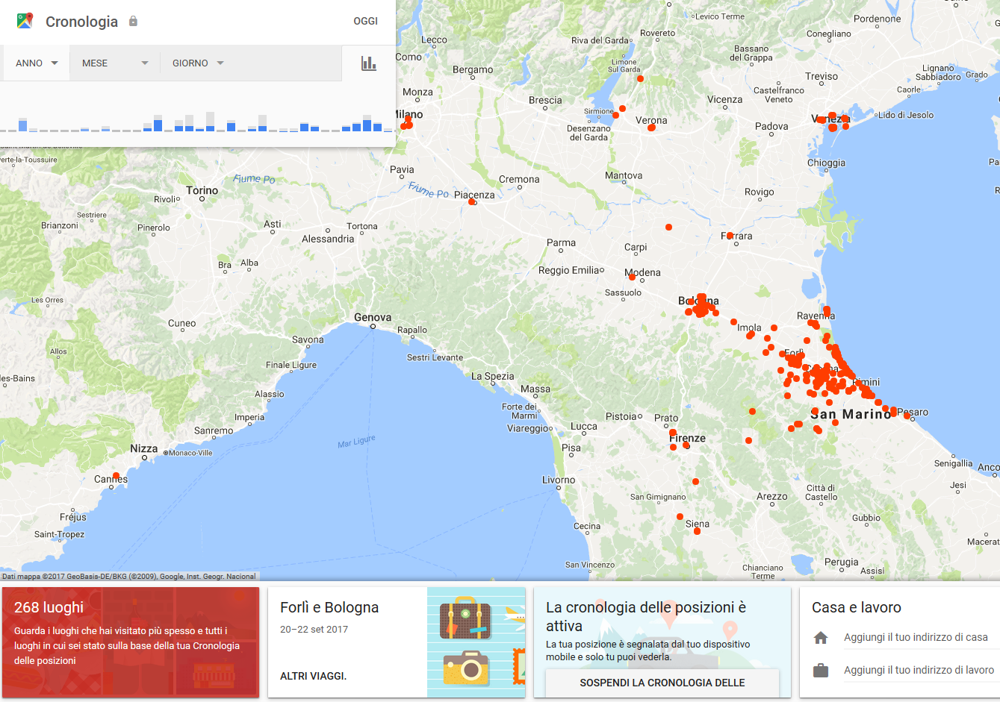
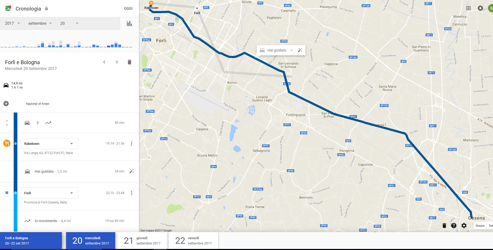
Open Street Map
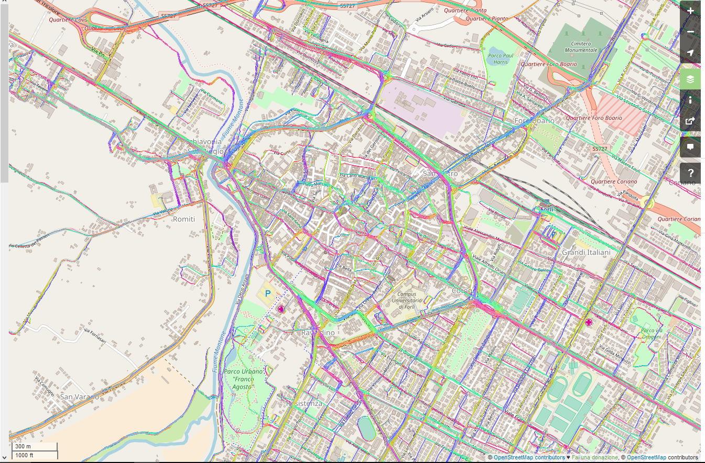
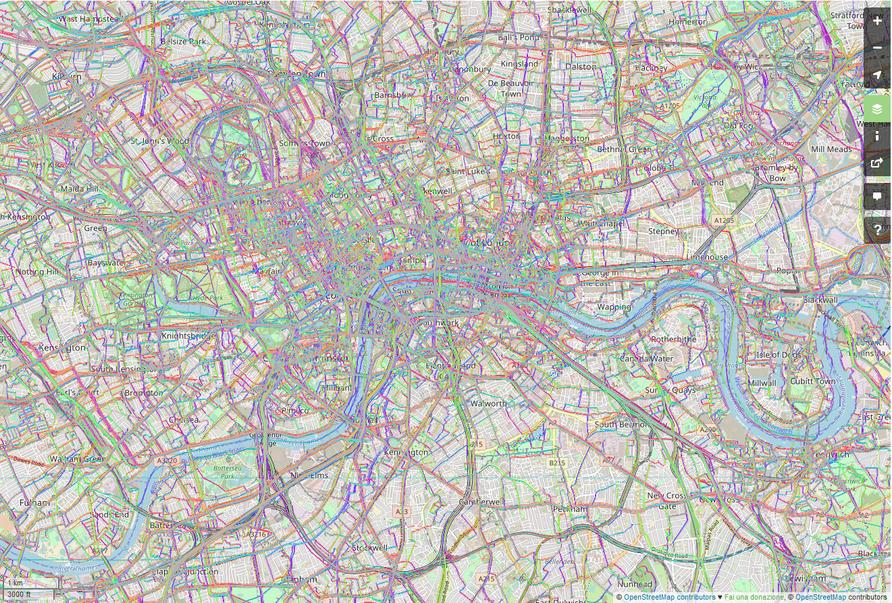
How do you identify relevant places?
Personal gazetteer is a personalized, digital record of significant locations (stay points) to an individual, similar to a geographical fingerprint
- Staypoints are places of interest for a user
- How can extract staypoints with the following semantics?
- Frequented places?
- Home?
- Work?
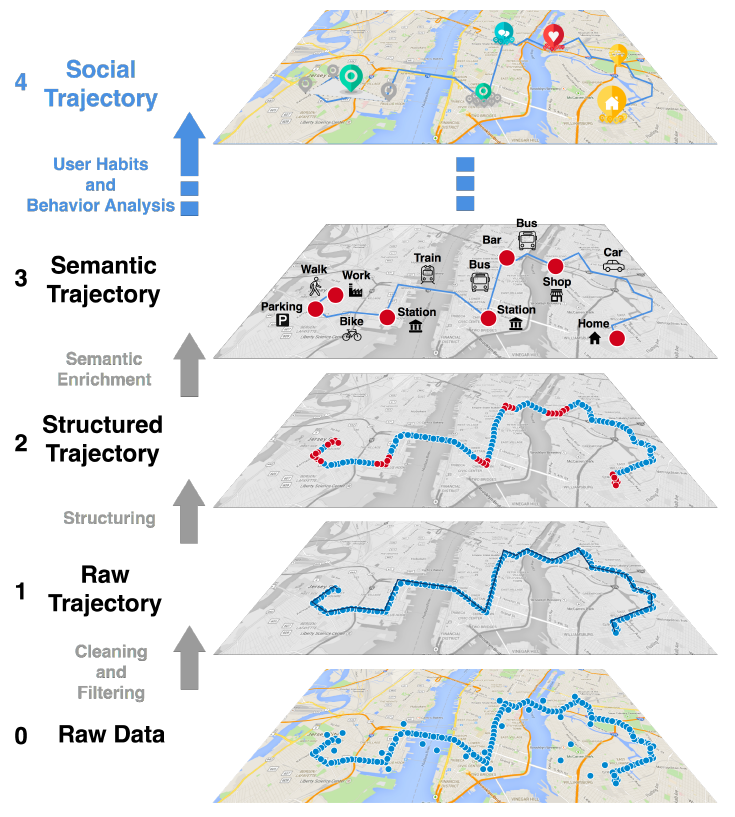
How do you identify relevant places?
Staypoints vs Trajectories
- Trajectories describe mobility behaviors/patterns
- USE CASE: understand where people going to an event come from?
- Frequent trajectories: an end-to-end cluster of trajectories that are:
- Compact enough
- Frequent enough
- Long enough
- Staypoints identify places of interest for a user
- Home: the place where a user frequently stops between 1 and 5
- Work: the place where a user frequently stops between 9 and 17
- Attend: a place where the user stands at least 20 minutes and where at least one commercial activity is situated
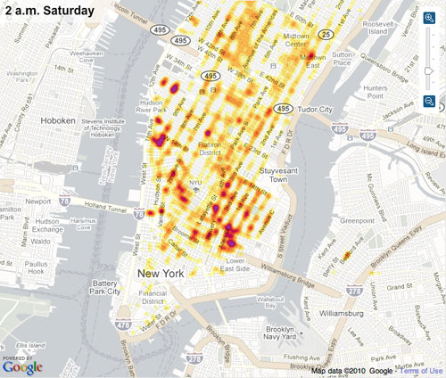
Social Habits: LiveIn vs WorksIn
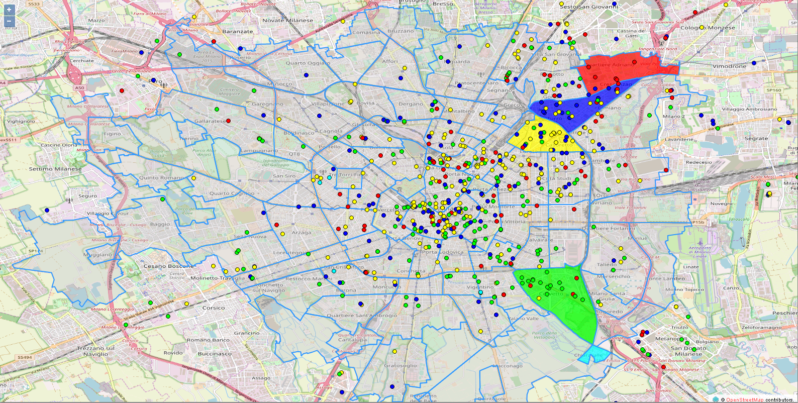
Colors are assigned according to the LiveIn semantic
Social Habits: LiveIn vs Attend
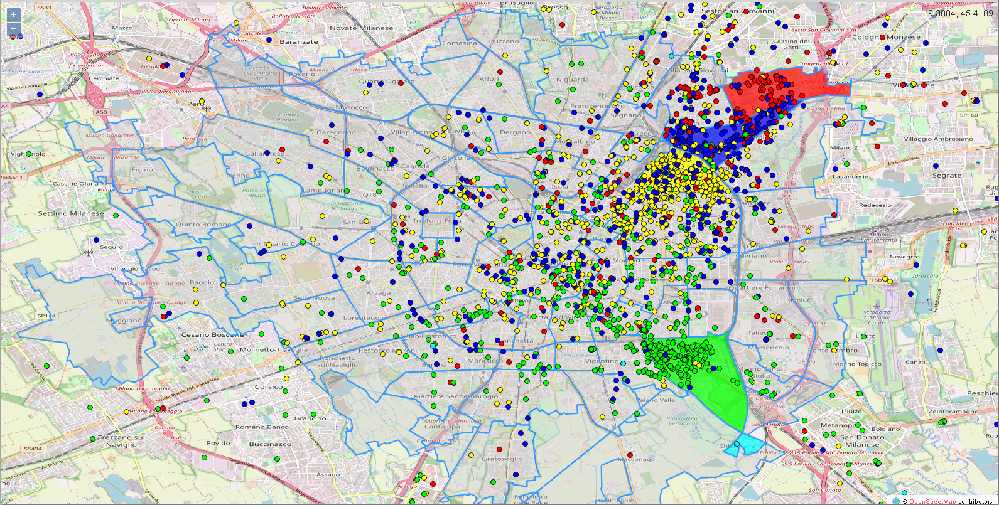
Colors are assigned according to the LiveIn semantic
Social Habits: LivesIn Adriano vs WorksIn *
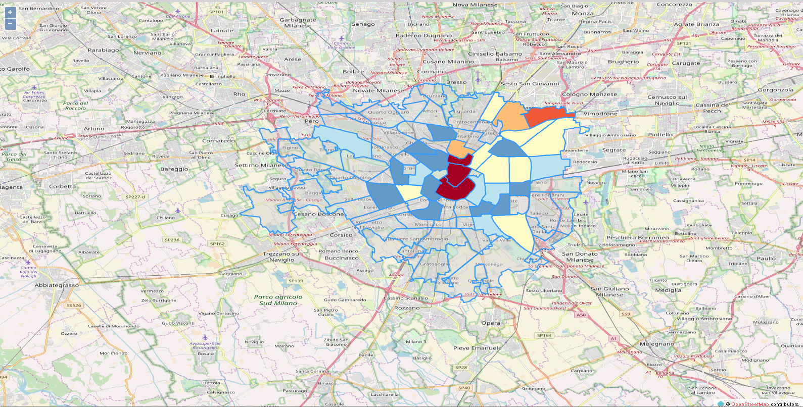
Heatmap
Social Habits: LivesIn * vs WorksIn Adriano
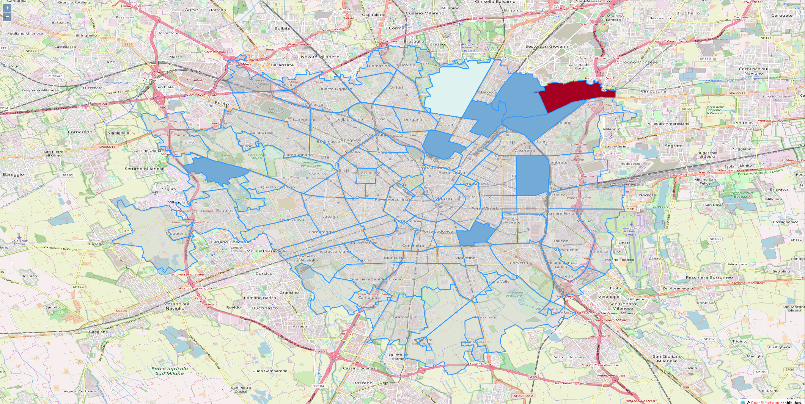
Heatmap
Defining attractiveness (Francia et al. 2024)
The previous figures provide qualitative results.
- How can we quantitatively measure the attractiveness of neighborhood?
- \(Attractiveness(n) = \frac{LiveIn_n + WorkIn_n + Frequent_n}{LiveIn_n}\)
- \(Attractiveness'(n) = \frac{MovementPattern_n}{\sum_i (MovementPattern_i)}\)
| Neighborhood | Distinct users | WorkIn + Frequent | LiveIn | \(Attractiveness\) | \(Attractiveness'\) |
|---|---|---|---|---|---|
| Brera | 2779 | 2396 | 440 | 545% | 83% |
| Duomo | 4607 | 4203 | 464 | 906% | 83% |
| Buenos Aires - Venezia | 3840 | 2644 | 1484 | 178% | 82% |
| XXII Marzo | 1790 | 1202 | 681 | 177% | 82% |
| … | … | … | … | … | … |
| Gallaratese | 1508 | 929 | 752 | 124% | 5% |
| Lodi - Corvetto | 1627 | 993 | 795 | 125% | 4% |
| Padova | 1628 | 996 | 753 | 132% | 3% |
| Adriano | 636 | 316 | 385 | 82% | 1% |
Exploitation of Trajectory Data
- Social habits and behaviors
- Identify relevant places
- Identify communities
- Urban mobility optimization
- Historical analysis of traffic flows
- Early identification of accidents
- Dynamic and real-time traffic management
- Car pooling
- Mobility/Movement mining identification of the mode of transport (car/foot) along a trajectory
- Reverse geocoding it is the process by which an address or the name of a place is associated with a spatial datum (latitude, longitude)
- Layer integration it is the process by which several information layers are superimposed and interrogated
- Proximity marketing (indoor)
- … and many others
Proximity marketing
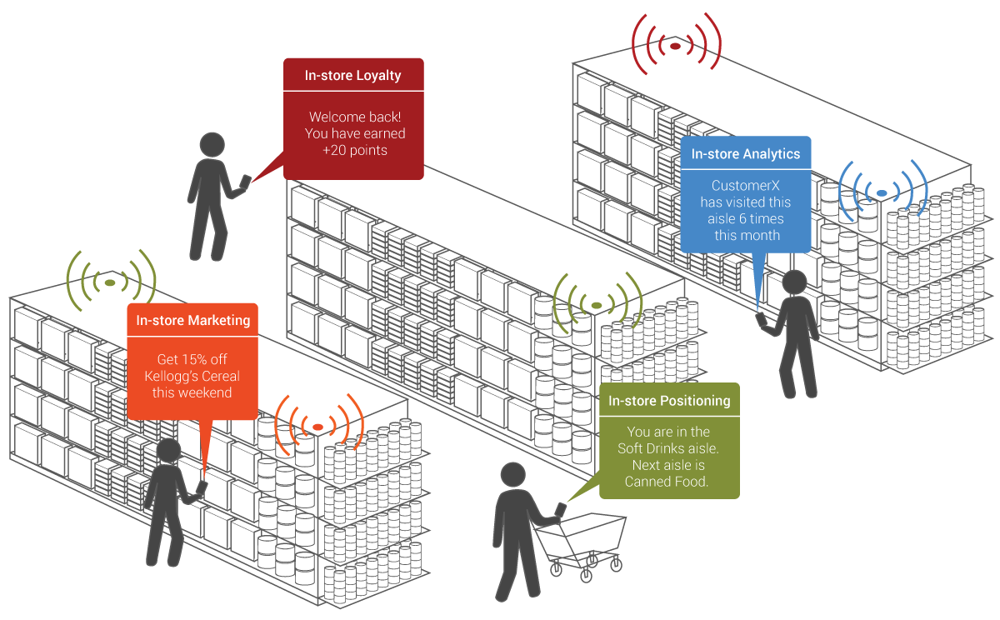
Social habits and behaviors: Ubiquitous User Profiling – Reality Mining
Create a synthetic profile of the community that transits at a point / place starting from anonymous trajectory data
Who are the customers of the shopping center?
- 50% live within 5km from the shopping center
- 20% attend the shopping center X too
- On Saturday, 20% of customers go to the cinema after being at the shopping center
- On Saturday, 30% of customers go to restaurant Y after being at the shopping center
Who comes on vacation to Cesenatico?
- In July 70% of the customers come from Emilia Romagna
- 27% of customers live in neighborhoods with an average income above 30K €
- In August, 25% of customers come from Milan
- 40% of the tourists have children
How do the people who use the Freccia Rossa Milan-Rome behave?
- 30%, once in Rome, moves less than 10km from the station
- 20%, once in Rome, take the subway
Urban mobility optimization: traffic flows
Flow: is defined by a sequence of overlapping trajectories that are not necessarily end-to-end compact
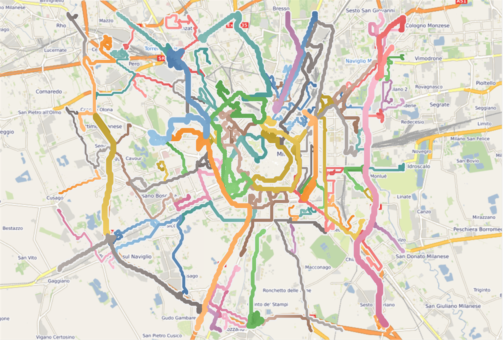
Top flows
Urban mobility optimization: traffic flows
Flow: is defined by a sequence of overlapping trajectories that are not necessarily end-to-end compact
USE CASE: identify crowded routes
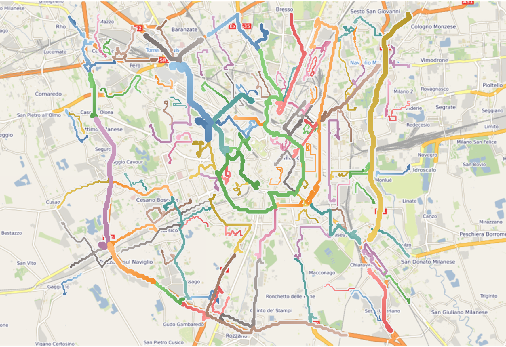
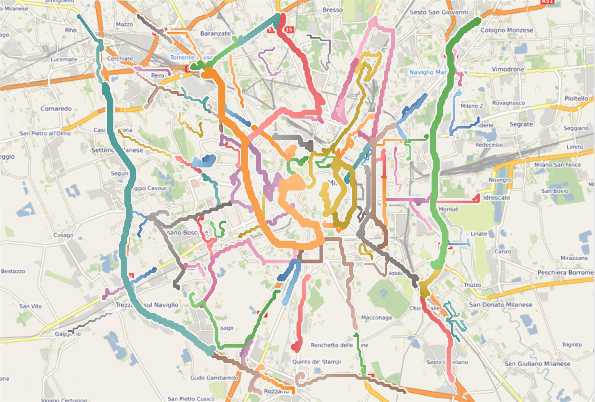
Urban mobility optimization: garbage collection paths for HERA
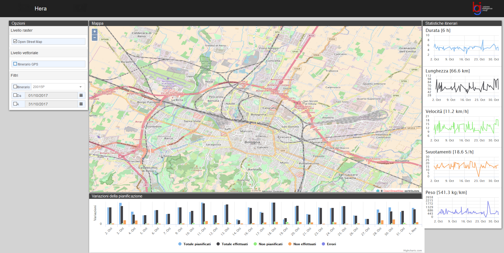
Overall statistics
Urban mobility optimization: garbage collection paths for HERA
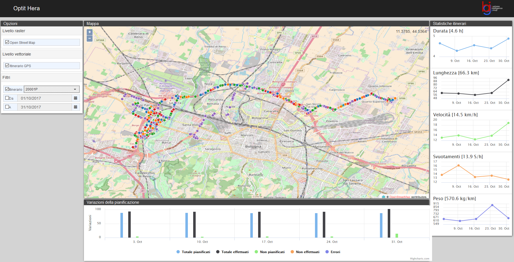
Trips of a single truck
Social Habits: La Città Intorno
Lacittàintorno is a programme for urban regeneration promoted by Fondazione Cariplo
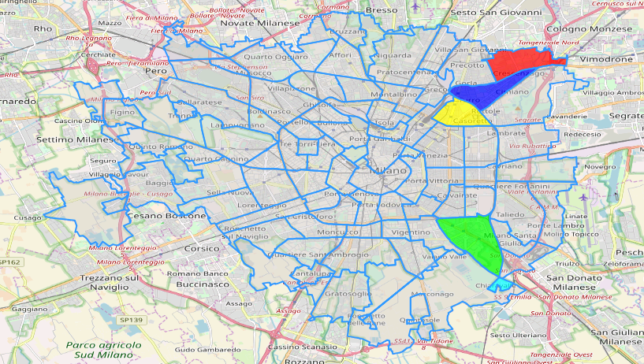
Neighborhoods of Milan (NIL)
Question: what is the profile of users in these neighborhoods?